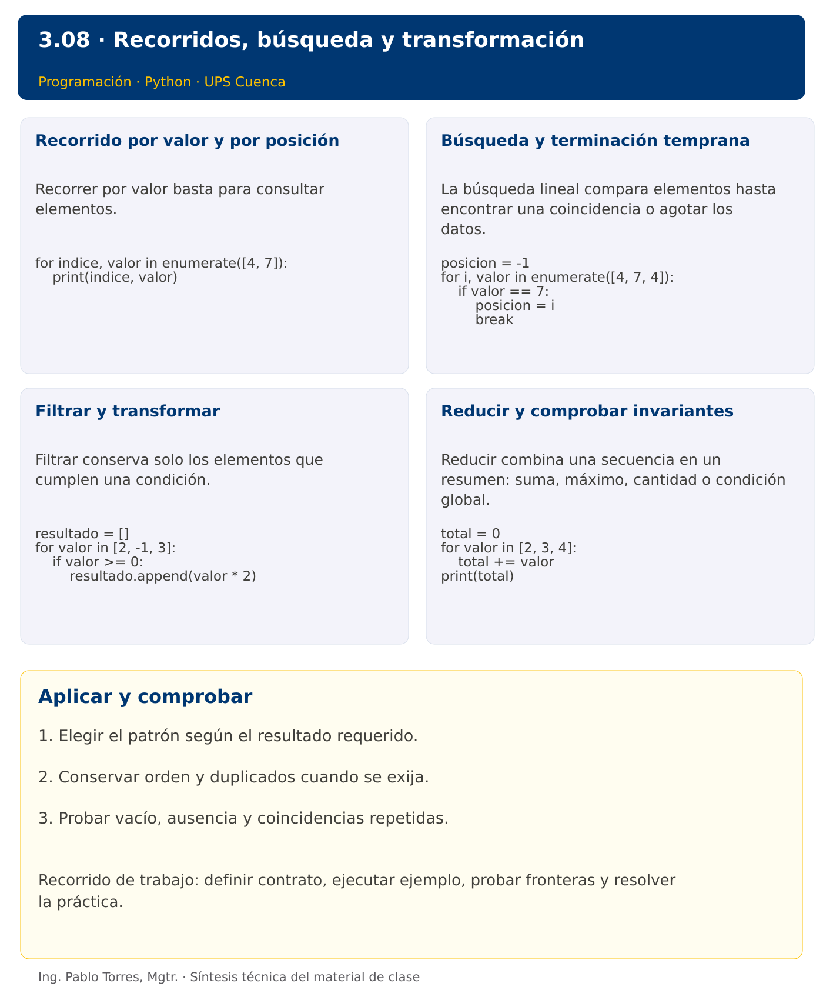

Programación

3.08 · Recorridos, búsqueda y transformación · Java
Autor: Ing. Pablo Torres, Mgtr.
Unidad 3: Lenguaje de Programación
Índice del curso · Versión Python · Presentación Python · Anterior · Siguiente
Conceptos · Demostración · Práctica de clase · Lo esencial
Contexto. Revisar un conjunto de consumos permite practicar búsqueda, filtrado, transformación y reducción. Cada patrón produce un tipo de resultado diferente y requiere un estado distinto.
Prerrequisitos. Listas, funciones y ciclos.
Versión complementaria. Estudiar el mismo problema y los mismos casos de Python mediante construcciones idiomáticas de Java. La presentación compartida corresponde a Python.
1. Conceptos y ejemplos
1.1. Recorrido por valor y por posición
Recorrer por valor basta para consultar elementos. Recorrer por posición es útil cuando se necesita relacionar índices o actualizar lugares concretos. Mantener la colección estable durante una lectura simplifica el razonamiento. Si se elimina un elemento durante un recorrido por índice, el siguiente puede desplazarse y quedar sin visitar.
Aplicar en Java. Usar for-each para lectura y for con índice cuando se requiere posición. Modificar estructuralmente ArrayList durante for-each puede producir ConcurrentModificationException; construir otro contenedor para filtrar.
int[] datos = {4, 7};
for (int i = 0; i < datos.length; i++) {
System.out.println(i + " " + datos[i]);
}
1.2. Búsqueda y terminación temprana
La búsqueda lineal compara elementos hasta encontrar una coincidencia o agotar los datos. Definir si se necesita primera posición, todas las posiciones o solo existencia. Usar -1 como ausencia es una convención válida si los índices aceptados son no negativos. Para todas las coincidencias, no detenerse tras la primera.
Aplicar en Java. Un ciclo permite buscar tanto en arreglos como en listas. List.indexOf devuelve -1 si no existe. Comparar objetos con equals cuando corresponda. El costo de búsqueda lineal crece con la cantidad de elementos examinados.
int posicion = -1;
for (int i = 0; i < datos.length; i++) {
if (datos[i] == 7) { posicion = i; break; }
}
1.3. Filtrar y transformar
Filtrar conserva solo los elementos que cumplen una condición. Transformar produce un resultado por cada elemento. Una combinación puede cambiar tanto contenido como cantidad. Establecer si se conservan orden y duplicados. No usar un conjunto para eliminar duplicados cuando el contrato también exige conservar el primer orden sin una estrategia explícita.
Aplicar en Java. Crear ArrayList con tipo de elemento adecuado y usar add. Mantener ciclos explícitos en este nivel, sin introducir streams como requisito. Si el resultado es un arreglo, su tamaño debe conocerse o calcularse.
var resultado = new ArrayList<Integer>();
for (int valor : new int[]{2,-1,3}) {
if (valor >= 0) resultado.add(valor * 2);
}
1.4. Reducir y comprobar invariantes
Reducir combina una secuencia en un resumen: suma, máximo, cantidad o condición global. Para “alguno” basta una coincidencia; para “todos” basta un contraejemplo para refutar. Definir el caso vacío de acuerdo con la lógica y el dominio. Comparar invariantes antes y después de cada iteración ayuda a detectar acumuladores reiniciados o resultados incompletos.
Aplicar en Java. Inicializar hayCoincidencia=false y todosCumplen=true si se sigue la semántica lógica habitual. Agregar una comprobación explícita de no vacío cuando el dominio lo requiera. Conservar la entrada al producir resultados.
int total = 0;
for (int valor : new int[]{2,3,4}) total += valor;
System.out.println(total);
Los bloques breves anteriores ilustran una operación y pueden requerir variables o imports del contexto. Utilizar la demostración siguiente como programa completo.
Síntesis visual

2. Demostración guiada
Problema. Seleccionar positivos de [-2,5,0,8,5] y mostrar su suma.
Contrato de esta demostración. Aceptar una secuencia de enteros. Retornar una secuencia nueva con valores estrictamente positivos, conservar orden y duplicados y no modificar la entrada. La selección vacía suma cero. Mostrar la selección y la suma por separado.
Fuente: ejemplos/Demo.java.
import java.util.ArrayList;
import java.util.List;
public class Demo {
static List<Integer> filtrarPositivos(int[] datos) {
var resultado = new ArrayList<Integer>();
for (int valor : datos) if (valor > 0) resultado.add(valor);
return resultado;
}
public static void main(String[] args) {
var resultado = filtrarPositivos(new int[]{-2,5,0,8,5});
int suma = 0;
for (int i=0; i<resultado.size(); i++) {
if (i > 0) System.out.print(" ");
System.out.print(resultado.get(i)); suma += resultado.get(i);
}
System.out.println();
System.out.println("Suma: " + suma);
}
}
Ejecutar
Abrir una terminal dentro de 03/3.08-listas-recorridos/java/ejemplos/ y ejecutar:
javac -encoding UTF-8 -d build *.java
java -cp build Demo
Salida esperada
5 8 5
Suma: 18
Interpretación. Seguir las asignaciones y los bloques en orden, identificar qué instrucción produce cada línea y contrastar con el contrato. Modificar un dato por vez y anticipar el resultado antes de ejecutar. La salida de referencia es una expectativa; el registro de verificaciones indica qué ejecuciones se realizaron.
Ejercicios prácticos progresivos
Resolver los siguientes ejercicios en orden. Entregar enunciado, fuente y resultado propio. Los casos mostrados permiten comprobar el contrato y no sustituyen una prueba adicional de frontera.
Adaptar los mismos datos y resultados a Java. Usar record para registros y bibliotecas estándar para archivos y procesos. Para resultados booleanos, aceptar true/false en Java frente a True/False en Python. Los ejercicios que inspeccionan el intérprete deben inspeccionar la JVM y el JDK equivalentes.
Ejercicio 01. Suma explícita
Sumar [3,5,2] con un ciclo, sin sum.
Caso de comprobación:
10
Ejercicio 02. Cantidad de negativos
Contar negativos de [-2,0,4,-1].
Caso de comprobación:
2
Ejercicio 03. Máximo sin cero artificial
Calcular máximo de [-8,-2,-5]. Rechazar lista vacía.
Caso de comprobación:
-2
Ejercicio 04. Primera posición
Retornar primera posición de 7 en [4,7,7], o -1 si no existe.
Caso de comprobación:
1
Ejercicio 05. Todas las posiciones
Obtener índices de 4 en [4,1,4,4].
Caso de comprobación:
0 2 3
Ejercicio 06. Filtrado de pares
Seleccionar pares de [3,2,4,2,5] conservando orden y duplicados.
Caso de comprobación:
2 4 2
Ejercicio 07. Transformar por signo
Transformar negativos a cero y duplicar los demás en [-2,0,3]. Conservar la entrada.
Caso de comprobación:
0 0 6
Ejercicio 08. Eliminar duplicados estables
Eliminar repetidos de [3,1,3,2,1], conservando primera aparición. No usar conjuntos.
Caso de comprobación:
3 1 2
Ejercicio 09. Acumulados parciales
Producir [2,7,8] desde [2,5,1], donde cada posición contiene la suma hasta ese lugar.
Caso de comprobación:
2 7 8
Ejercicio 10. Mezcla ordenada
Mezclar [1,4,7] y [2,4,8] en orden, conservando duplicados, sin ordenar el resultado después.
Caso de comprobación:
1 2 4 4 7 8
3. PC3.08 · Práctica de clase
Definir seleccionar_palabras(datos, minimo): devolver palabras cuya longitud sea al menos minimo y que contengan una vocal ASCII. Conservar orden, duplicados y lista original. Ignorar diferencias de mayúsculas al buscar vocales. Rechazar minimo negativo. Agregar una función que retorne la suma de longitudes seleccionadas.
Requisitos y restricciones
- Resolver en una sola versión, Python o Java.
- Mantener nombres y responsabilidades indicados; explicar cualquier adaptación idiomática.
- Aplicar únicamente los conceptos ya introducidos.
- Conservar las entradas cuando el enunciado lo exija.
- Distinguir valores fuera de contrato de errores que el programa debe gestionar.
Casos de aceptación de la PC
| Entrada / escenario | Resultado esperado |
|---|---|
| ["SOL", "rhythm", "luz", "a"], 3 | ["SOL", "luz"]; suma 6 |
| [], 2 | []; suma 0 |
| ["sol", "sol"], 3 | conservar ambas |
| minimo=-1 | error de argumento |
Probar y registrar evidencia
Crear una carpeta personal PC3.08 separada de las demostraciones. Guardar cada caso con entrada, resultado esperado y resultado real. Compilar javac -encoding UTF-8 -d build *.java y ejecutar java -cp build Solucion; usar Solucion.java como entrada personal. Para entradas de teclado, guardar casos/entrada-01.txt y redirigirla con < casos/entrada-01.txt. Para funciones, crear llamadas con los datos de la tabla.
- Registrar
evidencias/PC3.08.mdcon comandos, versión real, salidas y explicación. - Crear un commit funcional como
feat(pc3.08): implementar-regla-principal. - Obtener el hash real con
git rev-parse HEADy anotarlo en la evidencia. - Revisar el cambio con
git show HASHy comparar avances congit diff HASH_ANTERIOR HASH_ACTUAL. Sustituir los marcadores por hashes reales. - Agregar una prueba de frontera distinta de las incluidas y justificar qué error detectaría.
No se requiere proyecto acumulativo ni rúbrica individual de esta PC.
Lo esencial
- Elegir el patrón según el resultado requerido.
- Conservar orden y duplicados cuando se exija.
- Probar vacío, ausencia y coincidencias repetidas.
Referencias técnicas
Índice del curso · Versión Python · Presentación Python · Anterior · Siguiente